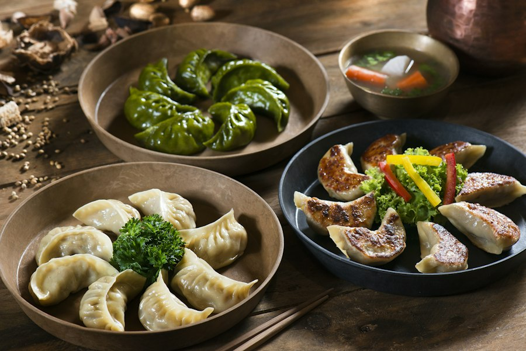

01
ENOGASTRONOMICO
Itinerario Enogastronomico del Lago
6 piatti d'autore della tradizione lariana: pesce persico dorato, missoltini del lago e autentici crotti.
Rispondi a 3 rapide domande per generare un piano su misura con orari, tappe esatte e passaporto da viaggio.
Seleziona la tua compagnia per calibrare il ritmo e le tappe della giornata.
Tutti i percorsi partono e rientrano alla Stazione Como San Giovanni.
Scegli l'atmosfera che meglio definisce la tua giornata ideale.

La scelta più rapida: collega Monza a Como San Giovanni in soli 32 minuti, fermando unicamente a Seregno. Treni moderni a doppio piano con climatizzazione e prese di ricarica.
Il collegamento ad alta frequenza: un treno ogni 30 minuti tutto il giorno. Percorre la tratta in 42 minuti, comodo per flessibilità oraria senza necessità di prenotazione.
Treni a lunga percorrenza per la Svizzera con fermata sia a Monza che a Como San Giovanni. Massimo comfort di prima e seconda classe (30 minuti di viaggio).
Itinerari cronologici passo-passo studiati con partenza e rientro alla Stazione di Como San Giovanni.
6 piatti d'autore della tradizione lariana: pesce persico dorato, missoltini del lago e autentici crotti.
I monumenti millenari della città di Como e le ville patrizie più celebri del mondo affacciate sull'acqua.
Dalla storica funicolare di Brunate e la vista sull'arco alpino fino ai canyon mozzafiato scavati nella roccia.
Calcio di Serie A a pelo d'acqua, idrovolanti storici, canottaggio olimpico e sentieri di cresta in quota.
Boutique d'alta moda, atelier storici della prestigiosa seta comasca e botteghe gastronomiche del centro.
Il fascino della lentezza: passeggiate sotto i platani, battelli a vapore d'epoca e aperitivi al tramonto dorato.
Biglietto di sola andata a 4,80 €. Acquistabile tramite App Trenord, alle emettitrici automatiche in stazione a Monza o con carta contactless Tap&Go direttamente sui tornelli.
Biglietteria centrale in Piazza Cavour (Pontile 1 e 2) o online su navigazionelaghi.it. Per esplorare Bellagio, Varenna e Lenno è consigliato il biglietto 'Libera Circolazione Centro Lago'.
Partenza da Piazza De Gasperi (10 min a piedi dal centro). Corse ogni 15–30 minuti; biglietto A/R ~6,60 €. Salita mozzafiato fino a 720 metri di quota in soli 7 minuti.
Incastonato come un fiordo alpino a forma di 'Y' rovesciata, il Lago di Como gode di un microclima unico che favorisce rigogliosi giardini botanici di azalee, camelie, palme e cipressi secolari affacciati su acque blu cobalto.
Fondata come colonia romana da Giulio Cesare nel 59 a.C. e culla di Alessandro Volta, Como è la capitale mondiale della seta d'alta moda, fornitrice insostituibile delle più celebri maison di Parigi e Milano.
Da rifugio prediletto per artisti e poeti dell'Ottocento come Liszt, Stendhal e Shelley a meta esclusiva del jet-set internazionale, Como incarna l'essenza più pura della nobiltà e della riservatezza lombarda.
«Quando si scrive la storia di due amanti felici sulle rive del Lago di Como, che sia sulle rive del Lago di Como che si collochi la loro dimora.»
Porta con te le mappe, i dettagli dei percorsi e le viste panoramiche a 360° durante il tuo viaggio in treno e sul lago.
Dalla stazione di Monza alla Stazione di Como San Giovanni: rapido, panoramico e sostenibile.
La scelta più rapida: collega Monza a Como San Giovanni in soli 32 minuti, fermando unicamente a Seregno. Treni moderni a doppio piano con climatizzazione e prese di ricarica.
Il collegamento ad alta frequenza: un treno ogni 30 minuti tutto il giorno. Percorre la tratta in 42 minuti, comodo per flessibilità oraria senza necessità di prenotazione.
Treni a lunga percorrenza per la Svizzera con fermata sia a Monza che a Como San Giovanni. Massimo comfort di prima e seconda classe (30 minuti di viaggio).
Acquisto rapido in 30 secondi senza code. I biglietti digitali non necessitano di convalida cartacea sul binario.
Biglietterie automatiche touch-screen 24/7 (carte contactless e contanti) e sportelli con personale.
Corsa singola ~4,80 € (o Pass IVOL 17,50 € tutto compreso). Ricorda: il biglietto cartaceo va sempre timbrato prima di salire a bordo!
Tutte le opzioni rapide da Milano Cadorna, Milano Centrale, Malpensa, Bergamo Orio al Serio e Linate.
Il treno che arriva direttamente sulle sponde del lago: parte da Milano Cadorna (collegata alla Metro M1/M2) e termina alla Stazione di Como Lago, a soli 50 metri da Piazza Cavour e dagli imbarchi dei battelli.
Prendi il treno Malpensa Express fino a Saronno (20 min), quindi trasbordo immediato sul treno R17 diretto a Como Lago (35 min). In alternativa: treno TILO S50 diretto Malpensa-Mendrisio con coincidenza rapida per Como San Giovanni.
Dall'aeroporto di Bergamo prendi il bus navetta rapido (15 min) fino alla Stazione FS di Bergamo, poi treno diretto per Monza FS (45 min). A Monza sali sul Regionale Express RE80 per arrivare a Como San Giovanni in soli 32 minuti.
Prendi la nuova metropolitana blu M4 da Linate fino alla fermata San Babila (12 min), cambio con M1 per Cadorna (8 min) e treno per Como Lago; oppure transfer M4 + M2 per Milano Centrale e treno RE80/EC per Como San Giovanni.
I binari si aprono direttamente sull'atrio liberty della stazione, dotata di edicola, bar caffetteria, deposito bagagli e infopoint turistico.
Dalla piazza della stazione, una suggestiva scalinata alberata porta in soli 5 minuti a piedi alla passeggiata di Viale Varese e alle mura medievali.
In 7-10 minuti a piedi si raggiungono Piazza Cavour, gli imbarcaderi della Navigazione Laghi per i battelli, la passeggiata di Villa Olmo e la Funicolare per Brunate.
6 piatti d'autore della tradizione lariana: pesce persico dorato, missoltini del lago e autentici crotti.
Dalla storica funicolare di Brunate e la vista sull'arco alpino fino ai canyon mozzafiato scavati nella roccia.
Calcio di Serie A a pelo d'acqua, idrovolanti storici, canottaggio olimpico e sentieri di cresta in quota.
I monumenti millenari della città di Como e le ville patrizie più celebri del mondo affacciate sull'acqua.
Boutique d'alta moda, atelier storici della prestigiosa seta comasca e botteghe gastronomiche del centro.
Il fascino della lentezza: passeggiate sotto i platani, battelli a vapore d'epoca e aperitivi al tramonto dorato.